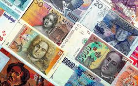
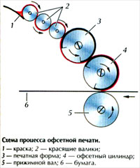
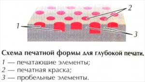

Тайны бумажных денег : как их делают

За выпуск банкнот, как правило, отвечают центральные национальные банки, они же занимаются их "проектированием". Тематику изображений (выдающиеся люди страны, архитектурные памятники) определяет группа консультантов или специальная комиссия.
БумагаСложный процесс создания денег начинается с изготовления банкнотной бумаги, во время которого в бумажную массу внедряют различные защитные элементы - от водяных знаков и текстильных волокон до полимерных вставок, нитей и химических реактивов, обнаруживаемых только специальными детекторами. Бумажная масса хорошо проклеивается (именно поэтому новые деньги "хрустят"), что делает бумагу еще более прочной - она выдерживает несколько тысяч двойных перегибов. При изготовлении банкнот последовательно применяется три вида печати: офсетная, глубокая (металлографическая) и высокая (типографская).
Офсетная печатьОфсетным способом печатаются фоновая сетка, различные розетки, а на мелких банкнотах еще и основной рисунок. При офсетном способе перенос краски с печатной формы на материал осуществляется не напрямую, а через промежуточный офсетный цилиндр. Поэтому, в отличие от прочих методов печати, изображение на печатной форме делается не зеркальным, а прямым.
|
 |
Печатные и пробельные элементы формы при этом лежат практически в одной плоскости, но их поверхности имеют разные физико-химические свойства. Печатающие элементы - гидрофобные, они хорошо удерживают краску, но отталкивают влагу. Пробельные же элементы - гидрофильные, т. е. хорошо смачиваются водой, а краску отталкивают. Краски для банкнот обычно разделяют на три цветовые группы - синюю, красную и желтую - и для каждой группы фотоспособом изготавливается отдельная печатная пластина (форма). Краска с этих пластин переносится на резиновое покрытие цилиндра, с которого и печатается многоцветное изображение. Применяется также Орловская печать - разновидность офсетной печати, которая позволяет получить плавный переход одного цвета в другой. Продукцию орловской машины технически невозможно повторить на другом оборудовании, а также на самой этой машине, не имея оригиналов форм. Этот способ был изобретен в России в 1890 году И.И. Орловым и до сих пор применяется во всем мире для выполнения высококачественных полиграфических работ.
Металлографическая печать (печать с глубоких форм)Глубокая печать - передача изображения с печатной формы, на которой печатающие элементы углублены по отношению к пробельным.
|
 |
Рисунок на крупных банкнотах, серийные номера, а также некоторые важные элементы на купюрах малого номинала с целью защиты от подделок выполняются способом высокой печати. Печатающие элементы на формах высокой печати расположены выше пробельных , отсюда и название. Исторически этот способ, по-видимому, первым получил распространение в качестве технологии тиражирования изображений (именно его, например, использовал Иоганн Гутенберг ). Далее следуют такие операции: продольная резка листов, поперечная резка, формирование банкнотных пачек, перевязка их бумажными лентами-бандеролями, упаковка в термопленку и другие.
Как делают американские деньги – доллары США .
В настоящее время доллар является одной из самых популярных валют. Для изготовления долларовых купюр используется специализированная бумага, которая на 25 % состоит из льняной нити и на 75 % - из хлопковой, бумага для печати американских денег имеет оригинальный цвет, а также небольшие шелковые вкрапления, которые видны в ультрафиолетовом свете.
Печать долларов происходит на длинных рулонах бумаги, ширина которого составляет 64.26 сантиметра, а длина 7 – 8 тысяч метров. Каждая купюра может иметь отклонение по размерам, которое не может превышать 2 миллиметров.
Вес каждой купюры составляет около 1 грамма, а для того чтобы купюра пришла в негодность, необходимо согнуть ее в одном месте не менее 4000 раз. Основным секретом изготовления доллара является состав краски, который используется при печати купюр.
Для печати лицевой стороны американских денег используется черная краска, которая обладает магнитными свойствами. Для печати оборотной стороны купюры использую зеленоватую краску, которая наоборот, не обладает магнитными свойствами. Именно из-за зеленой краски доллар и получил множество жаргонных названий.
Технология печати доллара довольно сложна, бумагу пропускают через три печатных валика, которые используются для металлографического способа печати. Первоначально печатается оборотная сторона купюры, затем купюра сушится при температуре 135 градусов Цельсия, а после печатается лицевая сторона купюры. В настоящее время при печати долларов используются различные виды защиты, такие как микропечать или защитные нити, для борьбы с фальшивомонетчиками дизайн долларовых купюр изменяется один раз в 7 – 10 лет.
В среднем, купюра в один доллар «живет» около 2 лет, купюра в 100 долларов может находиться в обороте до 5 лет.
Одной из самых красивых американских купюр является купюра в 2 доллара. Выпуск ее был прекращен в 2003
году из-за слишком высокой стоимости печати.
По материалам сайта : http://www.e-allmoney.ru/